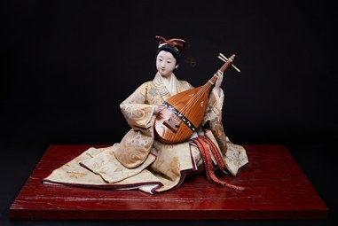

In (Nhịp điệu) là tác phẩm thuộc dòng Jidai Fuzoku Ningyō – dòng búp bê truyền thống tái hiện trang phục, phong tục và nghệ thuật của Nhật Bản qua các thời kỳ lịch sử. Tên gọi "In" mang ý nghĩa nhịp điệu và sự ngân vang, gợi lên vẻ đẹp của âm nhạc truyền thống trong đời sống văn hóa Nhật Bản.
Tác phẩm khắc họa hình ảnh một người phụ nữ đang ngồi biểu diễn đàn biwa, một trong những nhạc cụ cổ truyền nổi tiếng của Nhật Bản. Bộ kimono nhiều lớp với gam màu trang nhã, mái tóc được búi theo phong cách cổ điển cùng tư thế uyển chuyển tạo nên vẻ đẹp thanh lịch và trang trọng. Từng chi tiết trên trang phục, nhạc cụ và biểu cảm khuôn mặt đều được chế tác thủ công với sự tinh xảo của các nghệ nhân.
Trong văn hóa Nhật Bản, âm nhạc không chỉ là hình thức biểu diễn mà còn là phương tiện nuôi dưỡng tâm hồn và truyền tải những giá trị văn hóa qua nhiều thế hệ. In thể hiện sự hòa quyện giữa nghệ thuật, vẻ đẹp truyền thống và tinh thần thanh nhã, góp phần tôn vinh di sản văn hóa lâu đời của Nhật Bản.
韻は時代風俗人形の作品です。時代風俗人形とは、日本の各時代の衣装、風俗、芸術を再現した伝統人形のことです。「韻」という名はリズムや響きを意味し、日本の文化生活における伝統音楽の美しさを思わせます。
本作は、日本の代表的な古典楽器のひとつである琵琶を、座して奏でる女性の姿を表しています。上品な色合いの着物の重ね、古典的な形に結い上げた髪、しなやかな姿勢が、優雅で格調ある美しさを生んでいます。衣装、楽器、顔の表情の細部に至るまで、職人の精巧な手仕事によって作られています。
日本文化において音楽は、単なる演奏にとどまらず、心を育み、文化的価値を世代を超えて伝える手段でもあります。韻は、芸術、伝統美、そして雅の精神が融け合った作品であり、日本の長い文化遺産をたたえています。